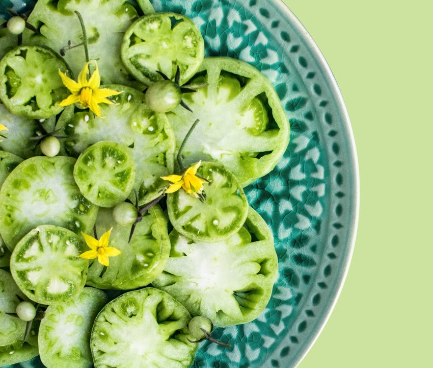

Simple Way To Start Eating Healthier
Keep healthy food readily available. When you get hungry, you’re more likely to eat the first thing you see on the counter or in the cupboard. Keep healthy food in easily accessible and visible places in your home and workplace. Put some fruits in a basket and place it on the kitchen counter.
